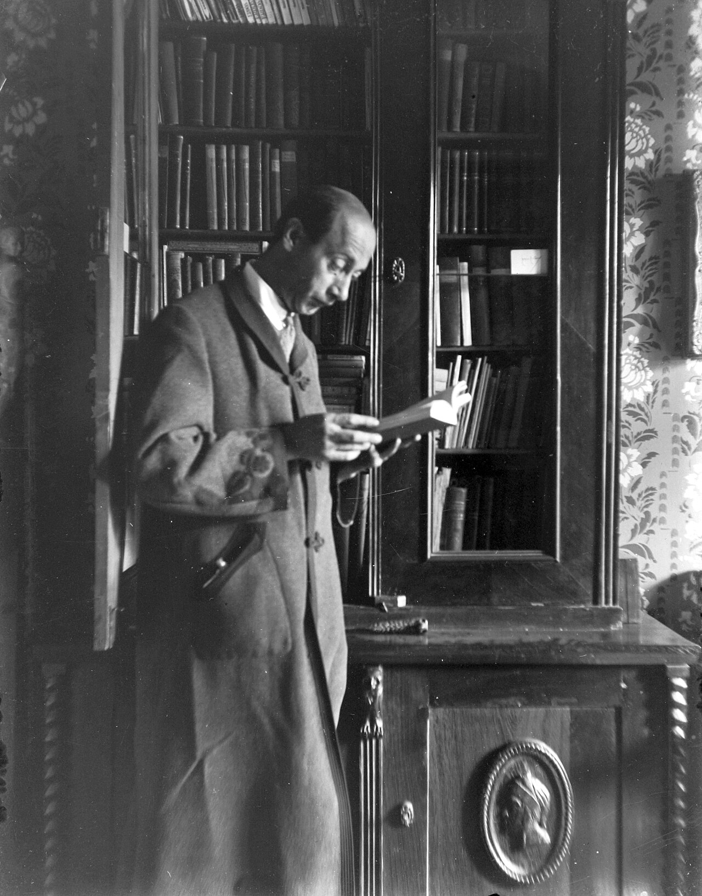
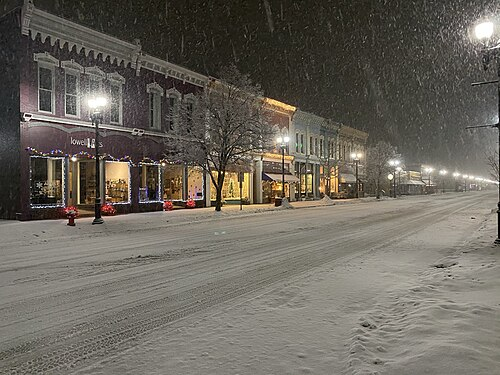
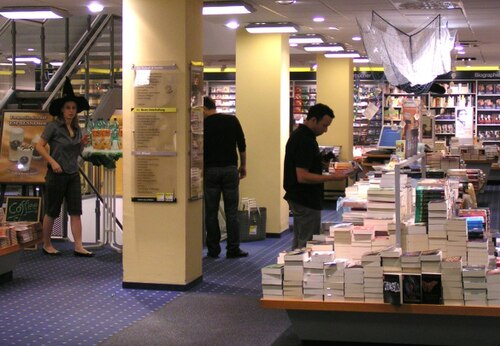

写真：FOTO:Fortepan — ID 24935（寄贈 Körmendy Pál）／Wikimedia Commons／CC BY-SA 3.0

はじめに
11月に入って、閉店の8時には本町通りの街灯の下が白く光るようになりました。
この時期になると「寝る前に少しずつ読める本はありますか」と聞かれることが増えます。分厚い長編は、冬休みまでとっておきたい。でも、毎晩なにか1冊は手元に置いておきたい。そういう方のために、今回は200ページに届かない本だけで7冊を選びました。
エッセイが2冊、短編集が2冊、詩集と絵本と、雪の物理の新書が1冊ずつ。どれも新刊の棚か、レジ前の「店主の机」の台に置いています。在庫の数は11月9日の朝に数えたものです。
ページ数を並べてみたら、いちばん薄い絵本が40ページ、いちばん厚い短編集でも176ページでした。毎晩どれくらい読めるかで、読み終わるまでの晩の数が変わります。下の棚で数えてみてください。
毎晩 分なら
7冊を全部読み終わるのは 44 晩目、今夜から始めると12月22日（火）です。
1ページを1分半として数えています（店主が寝る前に読むときの速さ）。詩集は1ページ2分、絵本は1ページ30秒で数えました。背表紙の幅は、その本のページ数です。1晩で読み終わる本は、黄色の札になります。

写真：Rnt20／Wikimedia Commons／CC BY-SA 2.5
- 著者
- 岸田 冬子
- 出版社
- 北窓舎
- ページ
- 128
- 税込
- 1,760円
- 在庫
- 4冊
湯たんぽの夜
岸田 冬子 著 北窓舎 128ページ 1,760円（税込） エッセイ
雪の多い町で暮らす著者が、11月から3月までの夜のことだけを書いた随筆集です。湯たんぽのお湯を沸かす音、灯油を買いに行く日、窓の結露を指でなぞる子ども。1篇が4〜6ページなので、1晩に2篇ずつ読むとちょうどいい長さです。
私がいちばん好きなのは、真ん中あたりの「やかんの番」。読み終えてから、店のストーブにかけているやかんを見る目が少し変わりました。
紙が厚めで、寝転んで片手で持っても閉じにくい本です。
- 著者
- 小野寺 湊
- 出版社
- 夜長社
- ページ
- 176
- 税込
- 1,980円
- 在庫
- 3冊
十二月の切符
小野寺 湊 著 夜長社 176ページ 1,980円（税込） 短編小説集
12月1日から31日まで、毎日1つずつ駅の窓口で切符を買う人たちの話が、31篇入っています。1篇は5ページ前後。帯に「12月に1日1篇」とあるとおり、来月の頭から読みはじめるのもおすすめです。
買う人は毎回ちがうのに、同じ窓口の駅員さんがときどき出てきます。後半になるほど、その人のことが気になってくる作りです。
今回の7冊ではいちばん厚い本ですが、毎晩2篇なら半月ほどで読み終わります。
店を閉めたあと、レジの奥で30分だけ読むのが、冬のあいだの決まりです。
そのとき読むのは、たいてい次の「すみれ堂だより」で紹介する本です。今回の7冊も、10月の終わりから1冊ずつ読んできました。
- 著者
- 日下部 すず
- 出版社
- 小舟社
- ページ
- 96
- 税込
- 2,200円
- 在庫
- 2冊
ストーブのそばで数える
日下部 すず 著 小舟社 96ページ 2,200円（税込） 詩集
数をかぞえる詩ばかりを集めた詩集です。こたつの中の足の数、雪の日に止まった電車の数、冬休みの残りの日。声に出して読むと、どの詩も1分ほどで読み終わります。
詩集は1ページに使う時間がほかの本よりも長いので、上の棚では1ページ2分で数えています。同じ詩を2回読む晩もあると思います。
函入りで、函の内側にも短い詩が1篇刷られています。贈りものにされる方が多い本です。
- 著者
- 杉浦 透
- 出版社
- みずうみ書林
- ページ
- 144
- 税込
- 1,045円
- 在庫
- 6冊
雪かきの朝の物理
杉浦 透 著 みずうみ書林（みずうみ新書） 144ページ 1,045円（税込） 科学の読みもの
なぜ湿った雪は重いのか。スコップを押すのと持ち上げるのでは、どちらが腰に楽か。雪の研究をしている著者が、家の前の雪かきを題材に、雪の結晶と力のことを書いた新書です。
図が多いので、ページ数のわりにすっと読めます。理科が苦手だった私でも、第3章の「屋根の雪が落ちる日」は2回読みました。
今回の7冊でいちばん安い1冊です。高校生のお客さんにもよく売れています。
- 文・絵
- 芦田 ひより
- 出版社
- 冬木舎
- ページ
- 40
- 税込
- 1,870円
- 在庫
- 5冊
郵便局 芦田 ひより冬木舎
ふくろう郵便局
芦田 ひより 文・絵 冬木舎 40ページ 1,870円（税込） 絵本
冬のあいだだけ、夜に開く森の郵便局のお話です。配達するのはふくろうで、手紙の宛名は「いちばん寒い家」だけ。1晩で読み終わるのは、7冊のうちこの絵本だけです。
子どもに読む本として選びましたが、店では大人の方が自分のために買っていくことのほうが多い1冊です。最後の見開きの、雪の上の足あとの絵をゆっくり見てください。
横長の判型なので、寝る前に布団の上で開くと、ちょうど両腕の幅くらいになります。

短い本は、読み終わったあとに表紙をもう一度見る時間があります。
7冊のうち4冊は、店の紙のカバーをかけると背の字が隠れます。カバーの背に書名を書いてお渡しすることもできます。レジで「背に書いて」と言ってください。
- 著者
- 真柴 ゆき
- 出版社
- ほそみち書房
- ページ
- 160
- 税込
- 1,650円
- 在庫
- 3冊
おでんの鍋は眠らない
真柴 ゆき 著 ほそみち書房 160ページ 1,650円（税込） 食の随筆
駅前で40年おでん屋をしてきた女将さんが、冬の仕込みと常連さんのことを書いた本です。大根の下ゆでの話から始まって、最後は店を閉める日の鍋の話で終わります。
夜に読むとお腹がすくので、そこだけは気をつけてください。巻末に、家の鍋で作る分量のおでんの作り方が4ページ付いています。
文字が大きめで、行間もゆったり組まれた本です。老眼鏡を外したまま読めた、と言ってくださったお客さんもいました。
- 著者
- 宇佐美 遼
- 出版社
- 灯火堂出版
- ページ
- 112
- 税込
- 1,430円
- 在庫
- 2冊
夜行列車の読書灯
宇佐美 遼 著 灯火堂出版 112ページ 1,430円（税込） 短編小説集
夜行列車の寝台で、読書灯をつけたまま眠れない人たちの話が5篇。どの話も、列車が終点に着く朝で終わります。1篇が20ページほどなので、毎晩1篇ずつ読むと5晩で読み終わります。
最後の1篇「上りの朝」は、この本の中でいちばん短く、いちばん明るい話です。7冊の最後に置いたのは、この話で冬の夜の特集を閉じたかったからです。
7冊とも、レジでお名前を言っていただければ7日間お取り置きします。電話でも承ります。冬のあいだ、どれか1冊が枕元にあればうれしいです。
（次の第88回は11月22日（日）、「年の暮れに贈る本」です。）
この回の感想をメールで送る